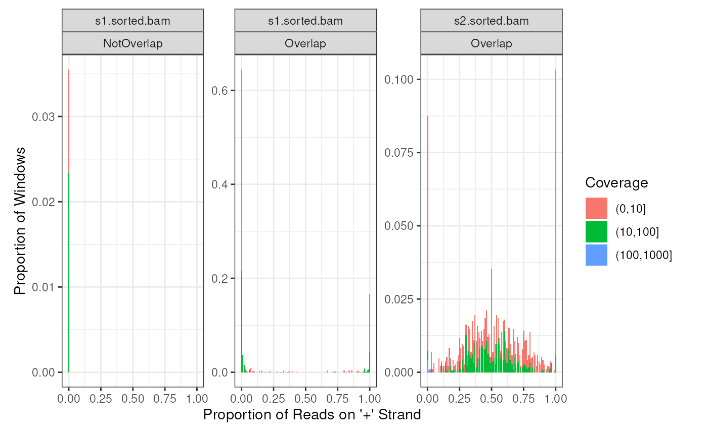
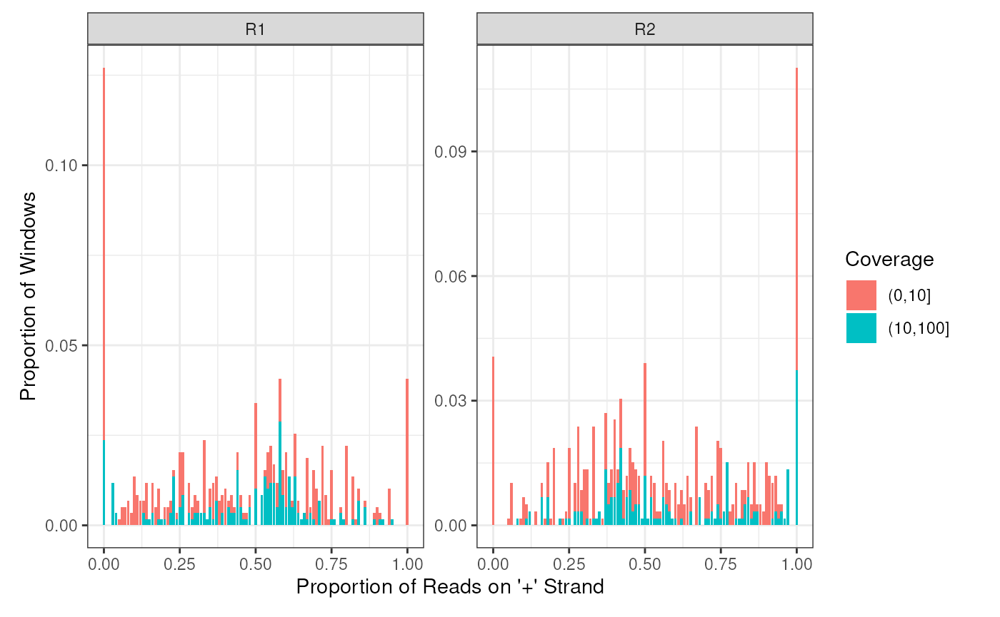
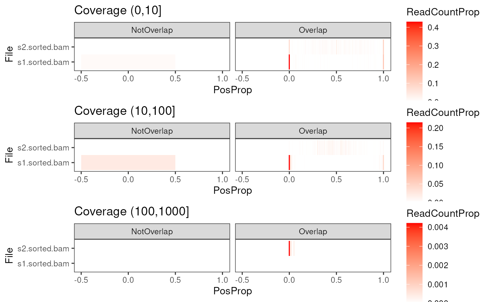
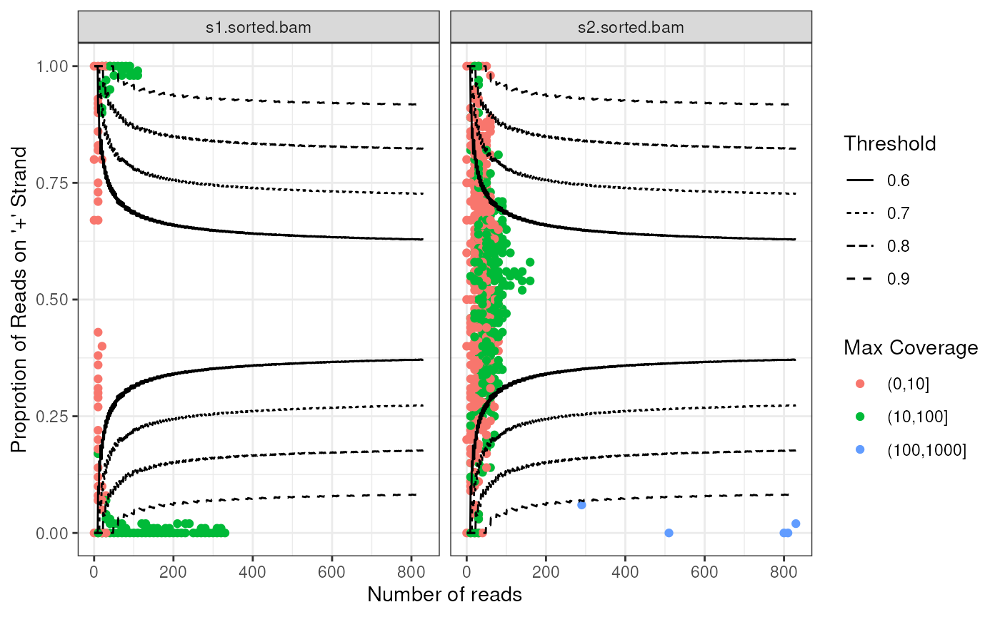
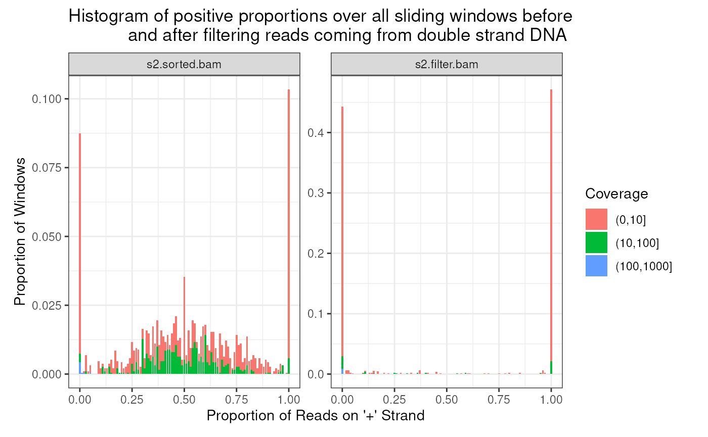

An Introduction To strandCheckR
Thu-Hien To
Bioinformatics Hub, University of Adelaidehien.to@adelaide.edu.au
Stevie Pederson
Black Ochre Data Labs, The Kids Research Institute Australiastephen.pederson.au@gmail.com Source:
vignettes/strandCheckR.Rmd
strandCheckR.RmdIntroduction
strandCheckR is a package used a window that slides across a bam file and gets the count/coverage of reads mapping to +/- strand in each window. The returned Data Frame gives information across the whole genome through each sliding window. That helps to quantify the amount of reads coming from double strand genomic DNA. It can be applied to detect DNA contamination within a strand specifc RNA-seq by assessing whether each window contains reads mainly from one strand, as would be expected from RNA molecules, or from both strands as would be expected from contaminating DNA. Hence, it is considered as an additional quality checking for strand specific RNA data. The package can also be used to detect regions with specific behavior (e.g. highest number of reads) through the whole genome and not only feature regions.
The window read count function is designed flexibly so that user can filter low mapping quality reads, set read proportion to overlap a window, set window length & step etc. It was also implemented in an efficient way to manange big bam file. For a typical human RNA-seq bam file, it takes about 3 minutes to scan and get strand information using a standard laptop 2,3 GHz i5 16 GB.
A function to filter out reads coming from double strand DNA is also provided. For each sliding window, it considers the proportion of +/- stranded reads comparing to a given threshold, to decide if a window contains reads derived from single strand RNA or double stranded DNA. A read that does not belong to any window coming from RNA will be removed. A read that belongs to some windows coming from RNA will be kept with a probability caluclated based on the proportion of +/- stranded of those windows.
Get windows information
The function getStrandFromBamFile is used to get the number of +/- stranded reads from all sliding windows throughout a list of bam files. The bam files should be sorted and have their index files located at the same path as well.
library(strandCheckR)
files <- system.file(
"extdata", c("s1.sorted.bam","s2.sorted.bam"), package = "strandCheckR"
)
win <- getStrandFromBamFile(files, sequences = "10")
# shorten the file name
win$File <- basename(as.character(win$File))
win## DataFrame with 3078 rows and 10 columns
## Type Seq Start End NbPos NbNeg CovPos CovNeg MaxCoverage
## <Rle> <Rle> <numeric> <numeric> <Rle> <Rle> <Rle> <Rle> <Rle>
## 1 SE 10 7696701 7697700 0 17 0 393 17
## 2 SE 10 7696801 7697800 0 17 0 393 17
## 3 SE 10 7696901 7697900 0 17 0 393 17
## 4 SE 10 7697001 7698000 0 17 0 393 17
## 5 SE 10 7697101 7698100 0 17 0 393 17
## ... ... ... ... ... ... ... ... ... ...
## 3074 SE 10 7398501 7399500 46 34 2241 1668 13
## 3075 SE 10 7398601 7399600 46 34 2241 1668 13
## 3076 SE 10 7398701 7399700 41 32 2046 1568 13
## 3077 SE 10 7398801 7399800 48 31 2500 1681 25
## 3078 SE 10 7398901 7399900 52 35 2581 1728 25
## File
## <character>
## 1 s1.sorted.bam
## 2 s1.sorted.bam
## 3 s1.sorted.bam
## 4 s1.sorted.bam
## 5 s1.sorted.bam
## ... ...
## 3074 s2.sorted.bam
## 3075 s2.sorted.bam
## 3076 s2.sorted.bam
## 3077 s2.sorted.bam
## 3078 s2.sorted.bamThe returned DataFrame has 10 columns that correspond to the read type (R1 or R2 or single end read), sequence names, starting & ending bases of the windows (by default the window length is 1000 and the window step is 100), number of positive & negative reads that overlap each window (NbPositive, NbNegative), number of positive & negative bases that overlap each window (CovPositive, CovNegative), the maximum coverage (MaxCoverage) and the file name (File). Windows that do not overlap with any read are not reported.
The windows with highest read counts, for example, can be obtained as follows.
## DataFrame with 6 rows and 10 columns
## Type Seq Start End NbPos NbNeg CovPos CovNeg MaxCoverage
## <Rle> <Rle> <numeric> <numeric> <Rle> <Rle> <Rle> <Rle> <Rle>
## 1 SE 10 7037801 7038800 17 817 838 40705 695
## 2 SE 10 7037901 7038900 13 816 653 40684 695
## 3 SE 10 7038001 7039000 4 810 180 40378 695
## 4 SE 10 7038101 7039100 1 805 50 40107 695
## 5 SE 10 7038201 7039200 1 804 50 40056 695
## 6 SE 10 7038301 7039300 1 801 50 39908 695
## File
## <character>
## 1 s2.sorted.bam
## 2 s2.sorted.bam
## 3 s2.sorted.bam
## 4 s2.sorted.bam
## 5 s2.sorted.bam
## 6 s2.sorted.bamHere is an example for paired end bam file.
fileP <- system.file("extdata","paired.bam",package = "strandCheckR")
winP <- getStrandFromBamFile(fileP, sequences = "10")
winP$File <- basename(as.character(winP$File)) #shorten file name
winP## DataFrame with 1184 rows and 10 columns
## Type Seq Start End NbPos NbNeg CovPos CovNeg MaxCoverage
## <Rle> <Rle> <numeric> <numeric> <Rle> <Rle> <Rle> <Rle> <Rle>
## 1 R1 10 7699501 7700500 0 1 0 49 1
## 2 R1 10 7699601 7700600 0 1 0 67 1
## 3 R1 10 7699701 7700700 0 1 0 67 1
## 4 R1 10 7699801 7700800 0 1 0 67 1
## 5 R1 10 7699901 7700900 0 1 0 67 1
## ... ... ... ... ... ... ... ... ... ...
## 1180 R2 10 7758601 7759600 10 0 989 202 4
## 1181 R2 10 7758701 7759700 9 0 911 202 4
## 1182 R2 10 7758801 7759800 9 0 905 202 4
## 1183 R2 10 7758901 7759900 7 0 1099 51 32
## 1184 R2 10 7759001 7760000 39 0 3032 0 32
## File
## <character>
## 1 paired.bam
## 2 paired.bam
## 3 paired.bam
## 4 paired.bam
## 5 paired.bam
## ... ...
## 1180 paired.bam
## 1181 paired.bam
## 1182 paired.bam
## 1183 paired.bam
## 1184 paired.bamIntersect with an annotation GRanges object
If you have an annotation data, you can integrate it with the sliding windows obtained from the previous step using the function intersectWithFeature. The annotation must be a GRanges object, with or without mcols. Make sure that the sequence names in windows and annotation data are consistent. By default, you will have an additional column in the returned windows which indicates wheather a window overlap with any feature in the annotation object. You can also get details of the overlapped features in the mcols of the annotation object by specifying it in the mcolsAnnnot parameter.
library(TxDb.Hsapiens.UCSC.hg38.knownGene)
annot <- transcripts(TxDb.Hsapiens.UCSC.hg38.knownGene)
#add chr before the sequence names to be consistent with the annot data
win$Seq <- paste0("chr",win$Seq)
win <- intersectWithFeature(
windows = win, annotation = annot, overlapCol = "OverlapTranscript"
)
win## DataFrame with 3078 rows and 11 columns
## Type Seq Start End NbPos NbNeg CovPos CovNeg
## <Rle> <character> <numeric> <numeric> <Rle> <Rle> <Rle> <Rle>
## 1 SE chr10 7696701 7697700 0 17 0 393
## 2 SE chr10 7696801 7697800 0 17 0 393
## 3 SE chr10 7696901 7697900 0 17 0 393
## 4 SE chr10 7697001 7698000 0 17 0 393
## 5 SE chr10 7697101 7698100 0 17 0 393
## ... ... ... ... ... ... ... ... ...
## 3074 SE chr10 7398501 7399500 46 34 2241 1668
## 3075 SE chr10 7398601 7399600 46 34 2241 1668
## 3076 SE chr10 7398701 7399700 41 32 2046 1568
## 3077 SE chr10 7398801 7399800 48 31 2500 1681
## 3078 SE chr10 7398901 7399900 52 35 2581 1728
## MaxCoverage File OverlapTranscript
## <Rle> <character> <character>
## 1 17 s1.sorted.bam NotOverlap
## 2 17 s1.sorted.bam NotOverlap
## 3 17 s1.sorted.bam NotOverlap
## 4 17 s1.sorted.bam NotOverlap
## 5 17 s1.sorted.bam NotOverlap
## ... ... ... ...
## 3074 13 s2.sorted.bam Overlap
## 3075 13 s2.sorted.bam Overlap
## 3076 13 s2.sorted.bam Overlap
## 3077 25 s2.sorted.bam Overlap
## 3078 25 s2.sorted.bam OverlapIf you have a gtf or gff file, you can use the function gffReadGR of the ballgown package to read it as a GRanges object.
Plot histogram and windows information
With these windows, you can have some plots via plotHist and plotWin functions which can be saved to an appropriate location.
To plot the histogram of positive proportion of the sliding windows, we use the function plotHist. This function will first calculates the frequency of positive proportion over all windows, and also group/normalize them based on given column names. Then it uses the geom_bar function of ggplot2 to plot those frequencies. The plot gives you an idea on how much double-strand DNA is contained in your sample. In perfectly clear ss-RNA-seq, the positive proportion of every window should be either around 0% or 100%. The more amount of windows have this proportion around 50%, the more the sample was contaminated by DNA.
plotHist(
windows = win, groupBy = c("File","OverlapTranscript"),
normalizeBy = "File", scales = "free_y"
)
In this example, file s2.sorted.bam seems to be contaminated with double strand DNA, while file s1.sorted.bam is cleaner. By default, the windows are splitted in to 4 coverage groups <10, 10-100, 100-1000, and >1000. It can be set via option split.
For paired-end data, we can group the Data Frame by read type:
plotHist(
windows = winP, groupBy = "Type", normalizeBy = "Type", scales = "free_y"
)
Heatmap can be used instead of classic barplot for histogram when specifying heatmap=TRUE. This would be usefull to visualize mutliple files in the same plot.
plotHist(
windows = win, groupBy = c("File","OverlapTranscript"),
normalizeBy = "File", heatmap = TRUE
)
plotWin creates a plot on the number of reads vs positive proportion of each window. There are also 4 lines correspond to 4 representative thresholds (0.6, 0.7, 0.8, 0.9). Threshold is a parameter that is used when filtering a bam file using filterDNA. Given a threshold, a positive (resp. negative) window is kept if and only if it is above (resp. below) the corresponding threshold line on this plot. This can be used to give guidance as to the best threshold to choose when filtering windows.
plotWin(win, groupBy = "File")
Filter bam files
The functions filterDNA removes potential double strand DNA from a bam file using a given threshold.
win2 <- filterDNA(
file = files[2], sequences = "10", destination = "s2.filter.bam",
threshold = 0.7, getWin = TRUE
)Other parameters can be specified for more flexible filtering: define the ranges that you want to always keep, the minimum number of reads under which you want to ignore, the pvalue threshold for keeping a windows etc. Look at the manual page of the function for more options and explanations.
Plotting the windows before and after filtering:
win2$File <- basename(as.character(win2$File))
win2$File <- factor(win2$File,levels = c("s2.sorted.bam","s2.filter.bam"))
library(ggplot2)
plotHist(win2, groupBy = "File", normalizeBy = "File", scales = "free_y") +
ggtitle("Histogram of positive proportions over all sliding windows before
and after filtering reads coming from double strand DNA")
Session Info
## R version 4.5.1 (2025-06-13)
## Platform: x86_64-pc-linux-gnu
## Running under: Ubuntu 24.04.3 LTS
##
## Matrix products: default
## BLAS: /usr/lib/x86_64-linux-gnu/openblas-pthread/libblas.so.3
## LAPACK: /usr/lib/x86_64-linux-gnu/openblas-pthread/libopenblasp-r0.3.26.so; LAPACK version 3.12.0
##
## locale:
## [1] LC_CTYPE=en_US.UTF-8 LC_NUMERIC=C
## [3] LC_TIME=en_US.UTF-8 LC_COLLATE=en_US.UTF-8
## [5] LC_MONETARY=en_US.UTF-8 LC_MESSAGES=en_US.UTF-8
## [7] LC_PAPER=en_US.UTF-8 LC_NAME=C
## [9] LC_ADDRESS=C LC_TELEPHONE=C
## [11] LC_MEASUREMENT=en_US.UTF-8 LC_IDENTIFICATION=C
##
## time zone: UTC
## tzcode source: system (glibc)
##
## attached base packages:
## [1] stats4 stats graphics grDevices utils datasets methods
## [8] base
##
## other attached packages:
## [1] TxDb.Hsapiens.UCSC.hg38.knownGene_3.22.0
## [2] GenomicFeatures_1.61.6
## [3] AnnotationDbi_1.71.1
## [4] Biobase_2.69.1
## [5] strandCheckR_1.27.1
## [6] Rsamtools_2.25.3
## [7] Biostrings_2.77.2
## [8] XVector_0.49.1
## [9] GenomicRanges_1.61.5
## [10] IRanges_2.43.5
## [11] S4Vectors_0.47.4
## [12] Seqinfo_0.99.2
## [13] BiocGenerics_0.55.3
## [14] generics_0.1.4
## [15] ggplot2_4.0.0
## [16] BiocStyle_2.37.1
##
## loaded via a namespace (and not attached):
## [1] tidyselect_1.2.1 dplyr_1.1.4
## [3] farver_2.1.2 blob_1.2.4
## [5] S7_0.2.0 bitops_1.0-9
## [7] fastmap_1.2.0 RCurl_1.98-1.17
## [9] GenomicAlignments_1.45.4 XML_3.99-0.19
## [11] digest_0.6.37 lifecycle_1.0.4
## [13] KEGGREST_1.49.1 RSQLite_2.4.3
## [15] magrittr_2.0.4 compiler_4.5.1
## [17] rlang_1.1.6 sass_0.4.10
## [19] tools_4.5.1 yaml_2.3.10
## [21] rtracklayer_1.69.1 knitr_1.50
## [23] labeling_0.4.3 S4Arrays_1.9.1
## [25] htmlwidgets_1.6.4 bit_4.6.0
## [27] curl_7.0.0 DelayedArray_0.35.3
## [29] plyr_1.8.9 RColorBrewer_1.1-3
## [31] abind_1.4-8 BiocParallel_1.43.4
## [33] withr_3.0.2 desc_1.4.3
## [35] grid_4.5.1 scales_1.4.0
## [37] SummarizedExperiment_1.39.2 cli_3.6.5
## [39] rmarkdown_2.30 crayon_1.5.3
## [41] ragg_1.5.0 httr_1.4.7
## [43] reshape2_1.4.4 rjson_0.2.23
## [45] DBI_1.2.3 cachem_1.1.0
## [47] stringr_1.5.2 parallel_4.5.1
## [49] BiocManager_1.30.26 restfulr_0.0.16
## [51] matrixStats_1.5.0 vctrs_0.6.5
## [53] Matrix_1.7-4 jsonlite_2.0.0
## [55] bookdown_0.45 bit64_4.6.0-1
## [57] systemfonts_1.3.1 jquerylib_0.1.4
## [59] glue_1.8.0 pkgdown_2.1.3.9000
## [61] codetools_0.2-20 stringi_1.8.7
## [63] gtable_0.3.6 BiocIO_1.19.0
## [65] tibble_3.3.0 pillar_1.11.1
## [67] htmltools_0.5.8.1 R6_2.6.1
## [69] textshaping_1.0.3 evaluate_1.0.5
## [71] lattice_0.22-7 png_0.1-8
## [73] memoise_2.0.1 bslib_0.9.0
## [75] Rcpp_1.1.0 gridExtra_2.3
## [77] SparseArray_1.9.1 xfun_0.53
## [79] fs_1.6.6 MatrixGenerics_1.21.0
## [81] pkgconfig_2.0.3